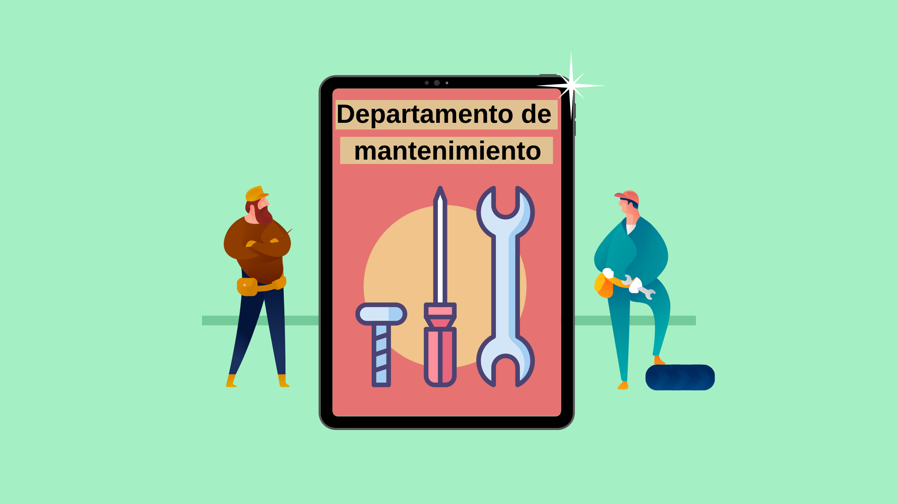

Coadyuvar en la formulación del plan de distribución anual del presupuesto para gasto corriente e inversión física para su aprobación, así como participar en la elaboración del Programa Anual de Obras e Infraestructura, contribuyendo en la definición de criterios y prioridades de asignación de recursos para el correcto desempeño de las labores de mantenimiento preventivo y correctivo a las instalaciones, así como la contratación de la obra pública necesaria para el fortalecimiento y desarrollo de las instalaciones físicas de los inmuebles.
Verificar
Verificar que la contratación de la obra pública y los servicios relacionados con la misma, se realicen con estricto apego a lo dispuesto en la Ley de Adquisiciones y Obras Públicas y su Reglamento.
Responsabilidades
Supervisar
Supervisar los trabajos de los contratistas, verificando que los servicios que presten se apeguen a las condiciones estipuladas en los contratos y a las especificaciones requeridas, así como instrumentar los cierres administrativos de las obras contratadas.
Elaborar el programa
Elaborar el programa anual de mantenimiento preventivo y correctivo a las instalaciones, así como de la contratación de la obra pública necesaria para el fortalecimiento y desarrollo de las instalaciones físicas de los inmuebles del Centro.
